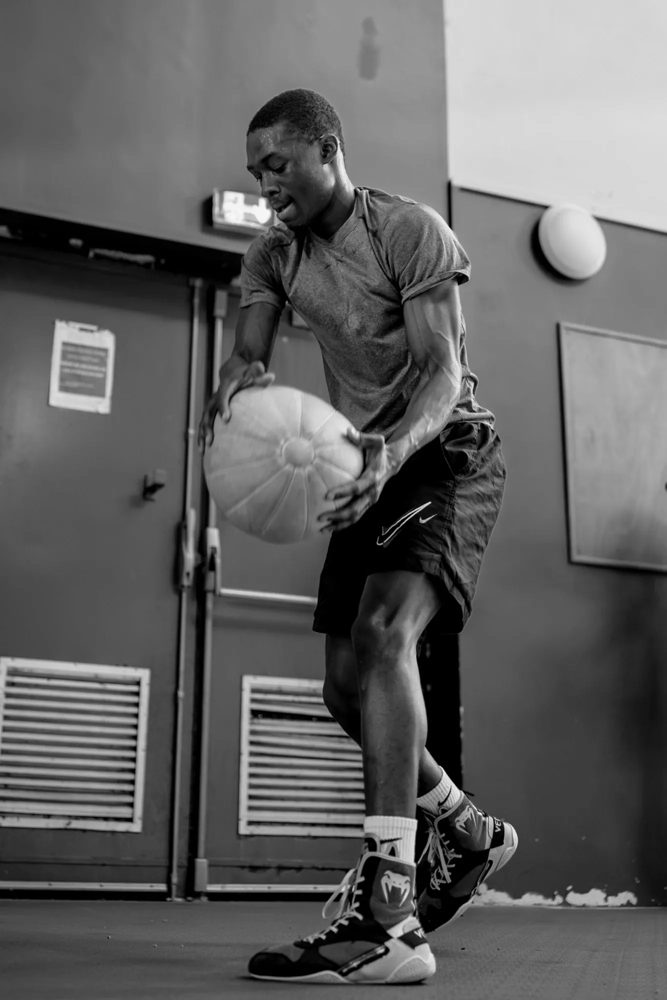

2025
Vice-champion de Normandie
Premier titre régional en catégorie 60 kg.
Road to LA28
Los Angeles 2028 est l’objectif. Rien n’est acquis : chaque étape se gagne en compétition, selon les règles de sélection de l’instance compétente.
La feuille de route
Confirmer le niveau en Normandie, après le titre de vice-champion régional.
Se mesurer au niveau national, sur les championnats applicables.
Tournois pertinents pour le parcours, à identifier avec l’encadrement.
Entrer dans le processus de qualification olympique applicable.

Calendrier · saison 2026–2027
Calendrier officiel de la boxe amateur élite publié par le comité régional de Normandie et la Fédération française de boxe. La participation de Tidiane à chaque tour dépend de son engagement par le club et de ses résultats.
| Date | Compétition | Lieu | Niveau | Pour Tidiane |
|---|---|---|---|---|
| 21 nov. 2026 | Championnat de Normandie Élite | Condé-en-Normandie (14) | Régional | Selon engagement du club |
| 28 nov. 2026 | Championnat de Normandie Élite · demi-finales | À confirmer | Régional | Selon résultats |
| 5 déc. 2026 | Championnat de Normandie Élite · finales | À confirmer | Régional | Selon résultats |
| 16–17 janv. 2027 | Championnats de France amateurs seniors · 1/16 et 1/8 de finale | Maisnil-lès-Ruitz (62) | National | Sur sélection régionale |
| 23–24 janv. 2027 | Championnats de France amateurs seniors · 1/4 et 1/2 finales | Saint-Avold (57) | National | Selon résultats |
| 30 janv. 2027 | Championnats de France amateurs seniors · finales hommes | Saint-Quentin (02) | National | Selon résultats |
| 4–6 juin 2027 | Coupe de France seniors | À confirmer | National | Selon engagement |
Sources : FFBoxe Comité régional Normandie (calendrier 2026-2027 et engagements, consultés le 10 novembre 2026) · FFBoxe, calendrier des compétitions nationales (mis à jour le 27 octobre 2026). Dates susceptibles d’évoluer : vérifier auprès des organisateurs.
Journal de progression
2025
Premier titre régional en catégorie 60 kg.
2026
Premier partenaire officiel : un soutien nutritionnel au quotidien de la préparation.
Voir le partenariatChaque étape a ses besoins : équipement, déplacements, préparation. Choisissez celle que votre entreprise soutient.